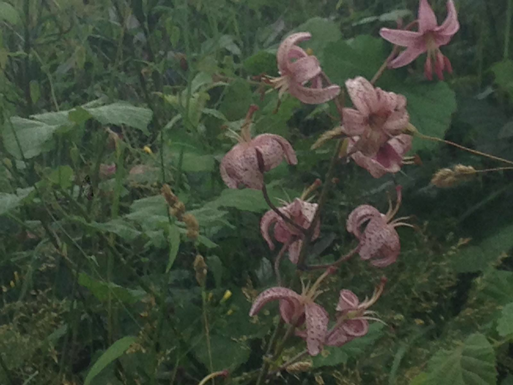
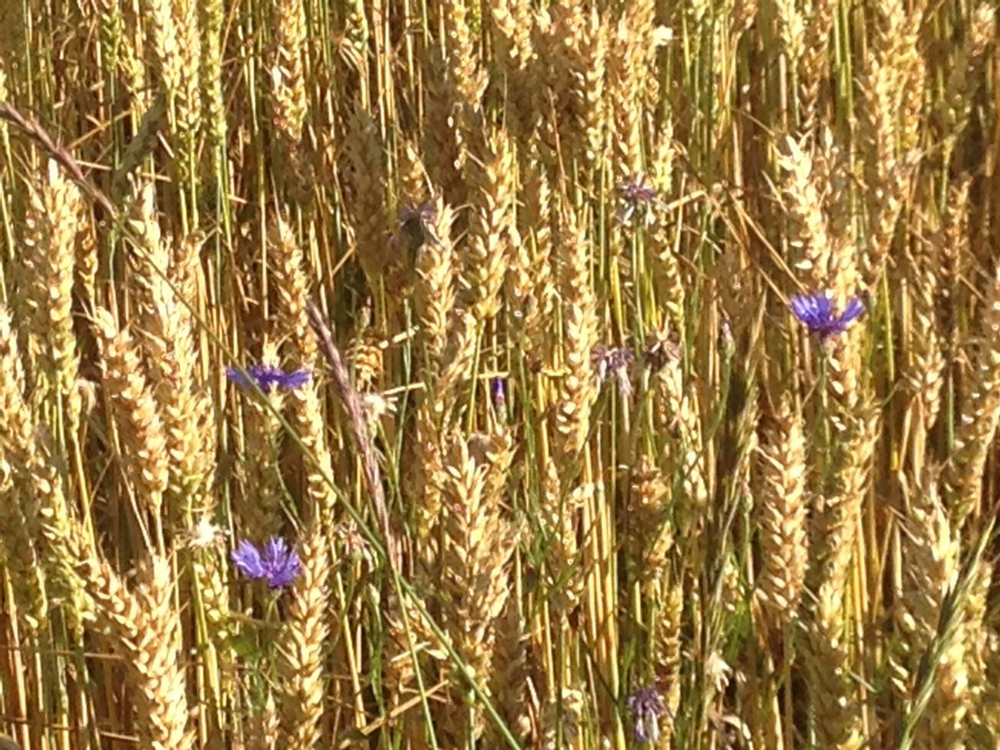

Schönheiten am Wegesrand

Auf den Wiesen-Storchschnabel trifft man häufig.

Im Gegensatz zu dieser Schönheit: man muss schon Glück haben, um dieTürkenbund-Lilie zu finden, die nach der Bundesartenschutz-Verordnung besonders geschützt ist.

Immer wieder ein hübscher Blickfang: Die Kornblumen als blaue Tupfer im Getreidefeld